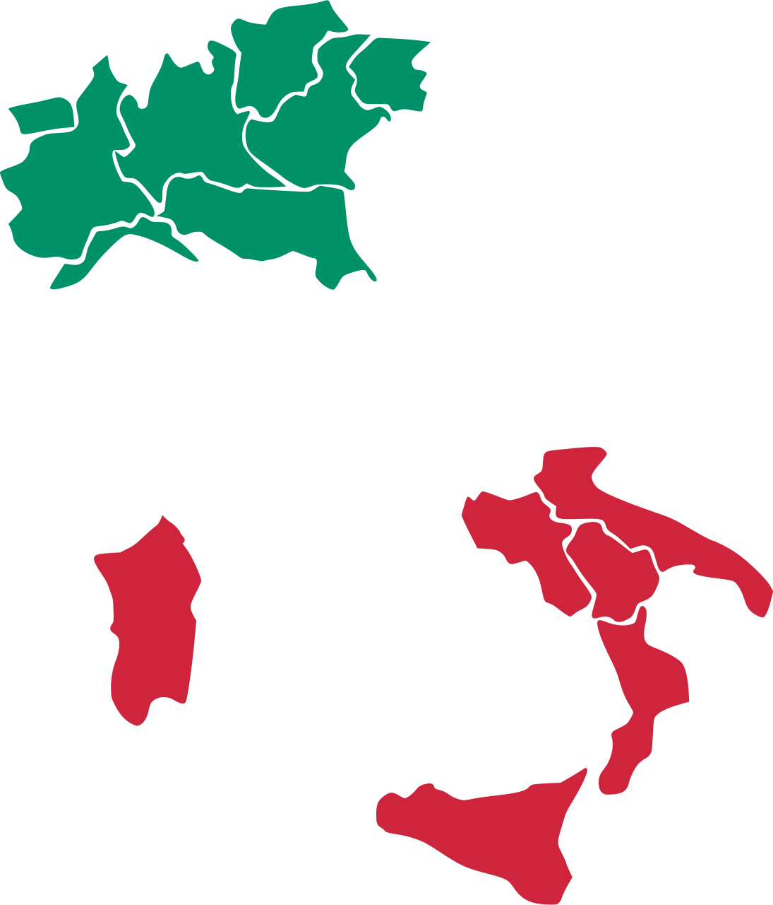
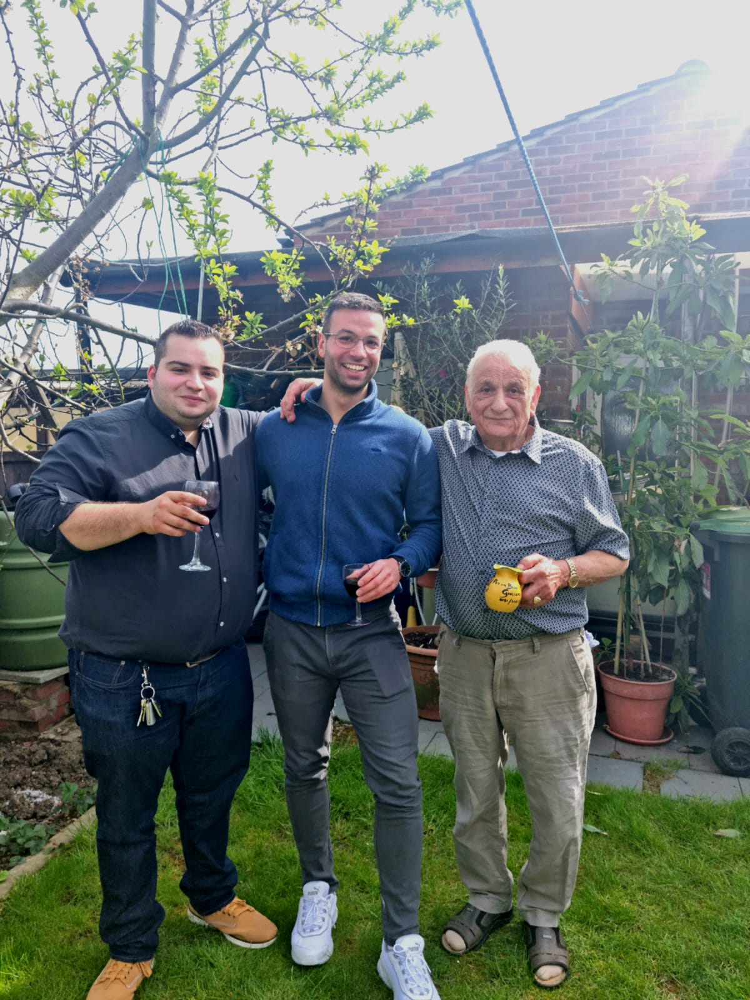

<style>
    .about-us__img {
        width: min(30rem, 100%);
    }
</style>


<section class="page__intro">
    <div class="site-con padding-block-3">
        <div class="page">
            <div class="page__title">
                <h1>About Us<span class="block">Who we are</span></h1>
                
            </div>
            <h2>{{ page.slogan }}</h2>
            <p>
                We are obsessed with making and producing wine. Our quest is to deliver superior wine grapes to you.
            </p>
        </div>
    </div>
    <div class="about__img back"></div>
</section>

<main class="padding-block-3">
    <section class="flex-col gap-2 width-s mx-auto">
        <p>
            It all began with our Nonno, Giuliano Grasso. A hard-working man who spent his younger years on the farm in Italy, Giuliano
            grew his wine grapes and made the wine with his own hands (and feet).
        </p>
        <p>
        After the second world war had left much of Italy impoverished, when he was twenty-two, Giuliano moved to London with
        his wife to begin a new adventure and seek greener pastures.
        </p>
        <p>
            Working his way up the socio-economic ladder and taking advantage of the economic opportunities, Giuliano maintained his
            love of wine and began distributing Italian wine grapes to his friends and neighbours.
        </p>
        <p>
            What began as a simple gift-bearing evolved into a business prospect, so his journey as an entrepreneur began.
        </p>
        <p>
            After spending many decades building a community of wine lovers and drinkers, his two grandchildren, Massimo and
            Giuliano Jr., have taken his business into their own hands.
        </p>
        <p>
            Their goal is to continue the work Giuliano built and spread the community beyond Greater London. By providing the U.K.
            with the same quality of Italian wine grapes that Giuliano has delivered for decades.
        </p>
        <p>
            We hope to build a harmonious relationship and become your suppliers of wine grapes.
        </p>
        <p>
            Thank you,
        </p>
        <p>
            Massimo and Giuliano Jr.
        </p>

        
    </section>
</main>